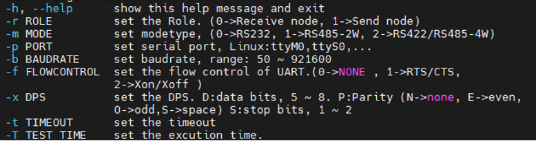
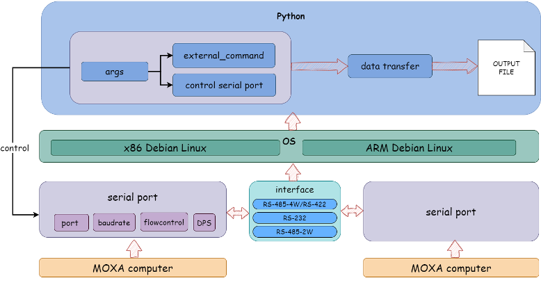
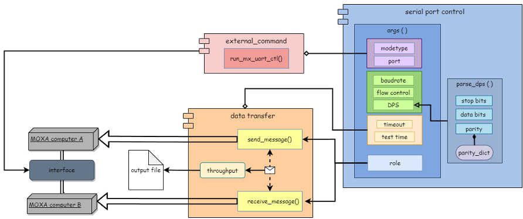
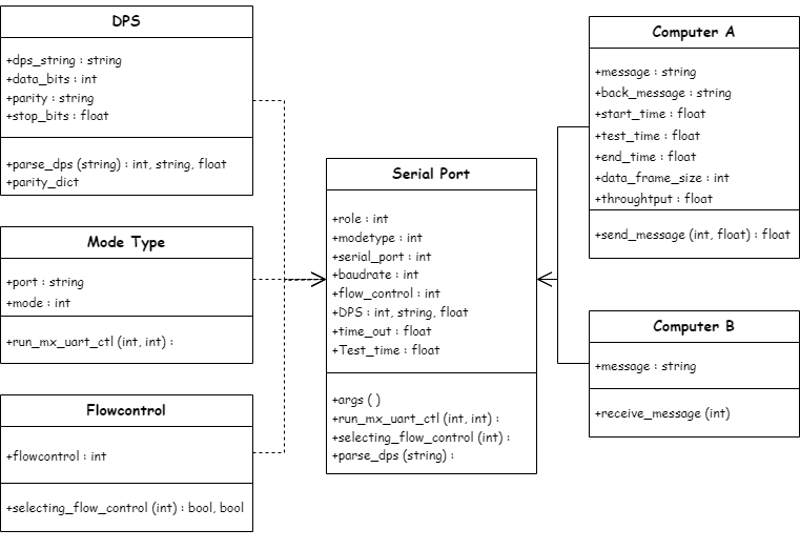

控制工業電腦通訊埠、量測傳輸吞吐量的模組化自動化測試工具。
通訊埠壓力及吞吐量自動化測試專案（Linux Serial Port Burning Test Case）
本專案旨在開發一個自動化測試程式，用於控制通訊埠（Serial Port），實現資料的傳送與接收，用於測試 MOXA 工業電腦（Industrial PC, IPC）中的通訊埠，並設計模組化架構與產出設計文件與測試報告。該程式提供使用者一個方便的指令介面（如圖一），以設定通訊埠參數、執行資料傳送或接收，並測量傳輸吞吐量；支援 x86 Debian 11 Linux 及 ARM Debian 11 Linux 設備運行，程式執行完畢將自動輸出執行結果與吞吐量紀錄文件。

-h --help顯示程式說明。-r ROLE設定角色，0 代表接收端，1 代表發送端。-m MODE設定通訊埠模式（RS232、RS485-2W 及 RS422/RS485-4W）。-p PORT對應 Linux 及 Windows 設定不同的串列通訊埠格式。-b BAUDRATE設定波特率，範圍在 50 到 921600 之間。-f FLOWCONTROL設定流量控制（NONE、RTS/CTS 及 Xon/Xoff）。-x DPS設定 DPS（資料位、奇偶校驗、停止位）。-t TIMEOUT設定通訊埠的超時時間。-T TEST_TIME設定執行時間。程式採用模組化設計，分為三個模組：通訊埠控制（Serial Port Control）、資料傳送與接收（Data Transfer）、外部指令（External Command）。如圖二為執行架構圖、圖三為軟體架構圖、圖四為程式類別圖（Class Diagram）。

argparse 模組定義與解析命令列參數（角色、通訊埠設定、波特率、流量控制、資料位、奇偶校驗）。pyserial 模組實現通訊埠控制。subprocess 模組操作，負責執行外部命令。mx-uart-ctl。
